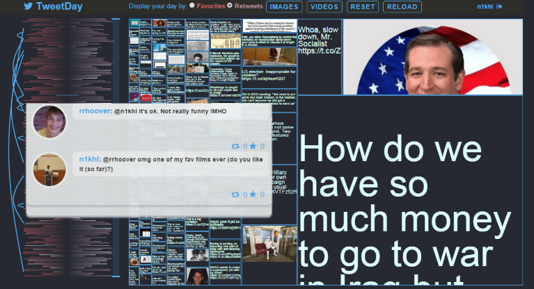
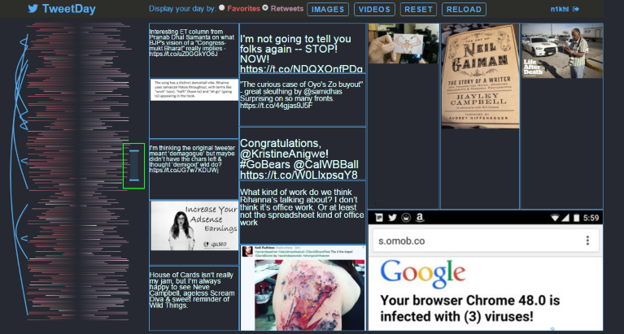

TweetDay
Visualizing your time away from Twitter.
- Interaction Design Front-end Development
In Case You Missed It
People and organizations use the acronym ICYMI to bring content to the attention of those who may have missed it before. How might we create something that would show users what they missed when they went away from Twitter?
One of our testers remarked,"This is actually making me want to log in to my twitter account more!" Try it here.
The Challenge
In order to verify our hypothesis, we interviewed a diverse range of people and found that even self-identified "savvy" respondents were frustrated with the amount of information that they had to deal with.
-- Users missed and expected to see a broad range of information daily.
-- Users wanted to quickly glance at this information in a limited space.
-- Users wanted to take control of their timeline and filter based on retweets, favorites, or media type (picture/video).
Initial Design
Our very first designs attempted to present tweets to users on a scatter plot.  However, this represented only two variables -- time and people. From user feedback, we realized that too much information was being presented on the dots signifying tweets themselves.
However, this represented only two variables -- time and people. From user feedback, we realized that too much information was being presented on the dots signifying tweets themselves.
The next iteration chose to simplify this by presenting the tweets as a heatmap.
 Inspiration
Inspiration
We looked to financial websites which used TreeMaps (example) to display a broad range of varied information daily.
We used the SeeSoft visualization to display every tweet as a line of text in a column on the left (example). The length of a line is representative of the tweet length.
When you hover on a cell on the right, you see the tweet in detail.
 Power to the Users
Power to the Users
Here's one of the key interactions designed to support users' need for filtering. Users can choose to filter by retweets or favorites and based on the kind of multimedia.
 The blue arcs on the left trace connections between tweets and identify common themes if any. You can see me debating the merits of Groundhog Day below.
The blue arcs on the left trace connections between tweets and identify common themes if any. You can see me debating the merits of Groundhog Day below.

We present about 2000 tweets in a single area on the left. Users can also dragged the ends of the scale to see only tweets from a certain period (screenshot below).

User Reactions
"This is definitely something that I would want to use."
"I don’t think anything like this exists and I would like to use it when it comes out."
In Retrospect
Overall, I felt like we had delivered on what we set out to make. But I don't think we solved all that we thought we would solve.
By introducing an onboarding process so that users can familiarize themselves with the different elements we can fix some of our problems. The contact area is so small, users have to hover very precisely over each element in the block to see the individual tweets.
We created a different way for existing users (who are struggling with the information overload) to keep in touch. In terms of engagement and interactions, the fact that users can't retweet or favorite the tweets they see here can be a barrier to adoption. I definitely think the TweetDay experience can be bettered as we work on known issues and continue to iterate on the designs going forward.